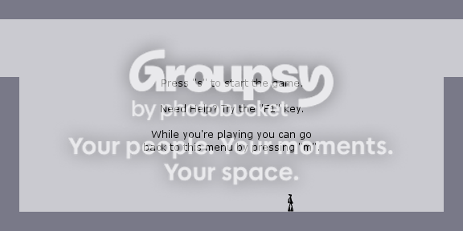
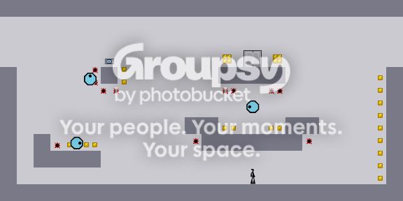

I want to save a map that I made but I can't find any [home] button to return to the edit menu...
Where is it?
Thanks!
Where is it?
Thanks!
Above your right, left, up, and down arrow keys, there should be a bunch of keys like Delete, Insert, Page Up, Page Down, End, and Home. The last one, Home, is the one you're looking for.
If you're on a laptop, try looking for the Home key near the right of the keyboard, it should be in a different colour from most of the other keys. Press "Function" and then that key.

It's not really a coloured key, it's just that the text will be a different colour.
Like:
If, for example, the Home key was the same as your right arrow key, the right arrow would be in white, and the text "Home" would be in blue. You would have to press "Function" and then the right arrow key to get "Home".
Find your Function key; whatever colour the "Function" text is in, that should be the colour the text of "Home" is in. Look for "Home" in that colour around the keyboard.

Hold on, it might not even be a function-combination key thing.
Look at this pic: http://www.notebookreview.com/assets/2013.jpg
The Home key is in the top right. What I said in my last post, I was talking about how the "Pause" button is the same as the Home button, but the "Pause" text is the same colour as the Function key. The difference in the pic is that you don't have to press Function to get to Home.
So, check for those different coloured texts, but also check to see if it might be a key on its own, maybe in the top right or something.
Also, see how in that pic there's a Home key hidden as a function-combination of the "7" key? Check for things like that, too.

Hmm. Do you have a webcam, to take a picture of your keyboard? Or maybe give us the type of laptop, so we can try and see what your keyboard looks like on Google?
Another help might be to tell what the window you're on says.

The window says "Edit Mode"? Really? Then just press the S key! After that, highlight everything in the box on the top called "level data" and hold CTRL and press C. Open a word processor like Notepad or Microsoft Word and press CTRL + V to paste the data. Save the document, and you're good to go.
 )
)



"Something like a desktop N buddie"Yes, I've seen it, but it doesn't work for my screen resolution... (1280 x 800)
http://metanet.2.forumer.com/index.php?showtopic=11170
There is already one made, into v3. Still, this might be a good idea. But really, post at least more than what you have next time, please.

Well it's better than the first, but you seriously need to do some upgrading. As in objects, enemies, realistic movement, etc. Let's hop that all comes in time.Well, that would be an exact copy of N which is really hard to make.
Thanks for your critique.UPDATE!!!There is about 650% more "Bad" in that post that you know.
NBuddy 0.3!!!
DOWNLOAD!!! (deleted)
I've changed/added MANY MANY things. It's almost "okay".
I'm too lazy to write down all included things, just press [F1] in the game.
I've also made a menu and other stuff which aren't standing in the F1 thing.
Remember: It's still a beta.
Take it from a a developer when I say: "Do NOT be lazy". Simple logic - let people know what they're downloading, or only the immensely ignorant will download it. Make a list of features. Display your game/project with taste. Don't be sloppy.
And for the record, "Beta", in terms of a game, generally means a widely-playable build of a game that is almost ready to be released in full. What you have is a single menu with a very basic build of a single level with little to no interactive elements. It's a start, but don't go around calling that one level your Beta; I hope to God it's not.
Still not fun. Soundless, not animated; a mimic of N lacking the shine N displays.
Also, the controls are wonky. It's too jerky.
Well even before I download, nice looking post. Lets see what's changed.... *downloads*You mean one-way platforms? Hm, shouldn't be too hard to include.
EDIT:
Just downloaded and played. Not much has changed, but I noticed a few subtle changes.
You can't escape from the middle platform under the exit, by the way. Or at least I can't. The mines always obstruct my jump.
Maybe introduce one-ways in the next update?
You have to jump diagonally.I've tried - because the jump isn't relevant to the holding length of the spacebar, it makes gameplay a little jerky. Maybe work on that one, too?Well... Realistic movement is REALLY hard to make. I may have to learn GML for that...

I think I skipped a couple of versions, but this is definitely an improvement. And since I've never used (or even heard of) this Game Maker 7, is it capable of making a game which equals the gameplay of N?Yes, you can even make 3D games (but Game Maker was created to make 2D games). One created a (not perfect) copy of GTA.
Have the option in the configure menu, to have the classic look, or the 360 N+ look.
Have the option in the configure menu also, to side scroll with your ninja or not.
Add new drones, and the drones from N+.
Have music, from N+, or like N+
HAVE FULL SCREEN
Have a better perfect 60 frame per second rate.


Somewhere on these forums is a topic which has all the sounds from N recorded and uploaded, so you might want to try search for that.Really??
i didnt put the whole picture cuz i dont want anyone to see it until im finishedYeah, just make 'em something like this:
any ideas on how i can make the eyes?
|\ /| | \ / |
at numa
k sorry
here
http://numa.notdot.net/map/120463

heard it comes out on 4/29/2008
sadly doesnt look as promising as i thought it would like the XBLA one
why so different?
http://psp.gamezone.com/gamesell/screens/s32715_2.htm
and why does it say atari published it..?
it might be fake but w/e... hope it doesnt look all like this
(don't know if this is right grammer...  )
)The sweep drone and the force drone are definitely going to be in v 1.5? Those look cool.